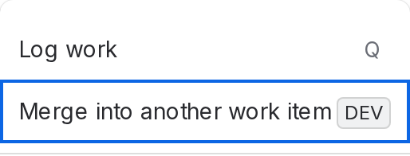
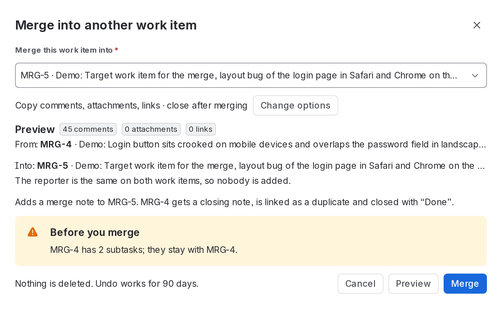
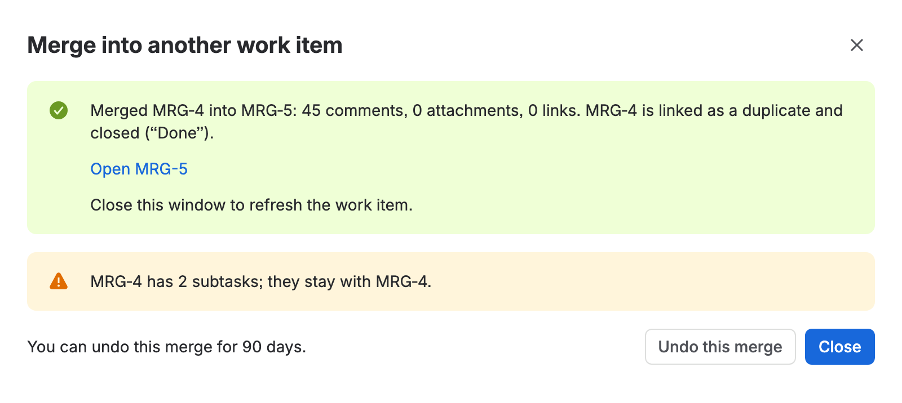
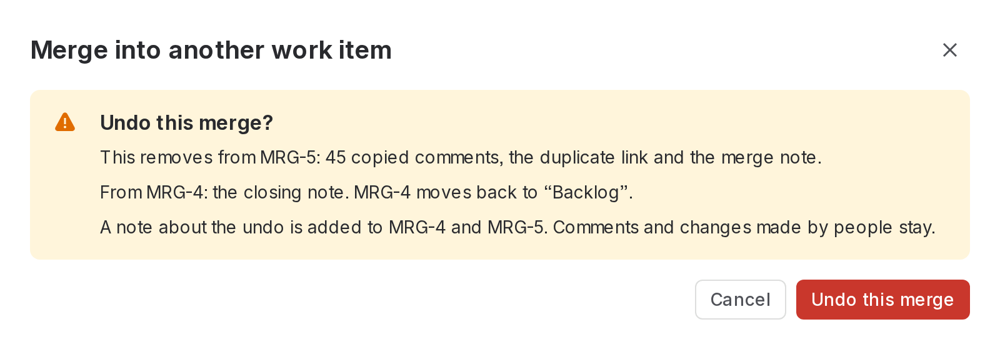
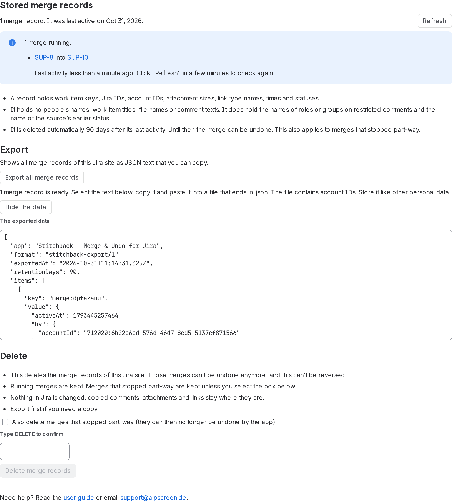

Stitchback merges one Jira or Jira Service Management work item (the source) into another (the target). It copies the comments, attachments and work item links of the source to the target. It adds the requester (in a software space: the reporter) when they can see the target. It also writes a merge note on the target and a closing note on the source. Then it links the two work items as duplicates and closes the source if its workflow allows. It uses a direct transition to a done status, or the transition you choose in the preview. Nothing is deleted from the source: the source work item stays, and the merge can be undone for 90 days.
The app runs on Atlassian’s Forge platform. It acts as the user who clicks, so it can do nothing that user is not allowed to do.
Stitchback is a paid app, billed by Atlassian. You can try it free for the trial period that the Atlassian Marketplace offers. The current prices are on the Pricing tab of the Marketplace listing. If the license ends, new merges are off, but undo, export and deletion keep working (see “License” below).

SUP-1, and choose it from the list.

What is copied:
Comments in a service space (target) are created as internal notes, so the customer does not receive copies of internal history. If a comment was restricted to a role or group, the restriction is kept. If that is not possible on the target, the comment is not copied rather than posted more openly. When a service request is merged into a software space, its internal notes stay behind by default. “Skip internal notes” is selected, and the preview says how many. Clear the option to copy them; they are then visible to everyone who can see the target, and the preview warns you.
Subtasks, and the child work items of an epic, stay with the source work item (the preview says so).
The app refuses five things:
Stitchback acts as you, so you need these Jira permissions. The preview checks the most important ones before anything is changed. If Add comments, Create attachments or Link work items is missing in the target, the preview says so and the merge does not start. Ask a Jira admin for the permission, or click “Change options” and turn off that part. If Jira still refuses one of these during the merge, the merge stops and says which step Jira refused. If Transition work items is missing in the source, the preview warns you and the source stays open. If another permission is missing, the merge runs to the end and the result names what was not done.
Preview changes nothing. It shows the two work items and the number of comments, attachments and links that would be copied. It also shows whether the requester (in a software space: the reporter) will be added, how the source will be closed, and any warnings. The warnings you may see:
Changing any option clears the preview, so you merge what you previewed. The Merge button appears once a preview has succeeded. Until then, the window tells you to click Preview first.
After a merge the window offers Undo this merge. If you open the source work item later, the window tells you that it was merged and offers Undo this merge again. The app asks you to confirm before it removes anything. The question lists what goes away from the target. These are the copies, the duplicate link, the added request participant or watcher, the merge note and any note about a large attachment. From the source it removes the closing note. It also says which status the source goes back to and that a note about the undo is added to both work items. Comments and changes made by people stay.

If the merge was started by someone else, the app first checks that you may delete their copies (see “Permissions you need”). Undo removes exactly what the question listed. Where its workflow allows, it moves the source back to its earlier status. It leaves a note on both work items (an internal note in service spaces). When it is done, the window lists what it removed, for example “Removed 45 comments, the duplicate link and the merge note from MRG-5.” It also says which status the source is in again, and that the closing note was removed from the source. A link that already existed between the two work items before the merge is kept, because it was not made by the app.
Undo is possible for 90 days after the merge’s last activity. After that the record is deleted and the merge can no longer be undone by the app.
If Jira refuses a step, for example for a missing permission, the merge stops part-way. The window offers Undo this merge: undo it, then merge again. If Jira is busy or does not answer, the merge stops and the window shows Resume. The app retries a failed call twice by itself first.
The vendor can pause the app for all sites (for example after a security problem). While it is paused, the window shows “Stitchback is paused” and this message instead of the merge form: “The app vendor paused Stitchback for safety. Merge, resume and undo are off, and nothing was changed. Try again in a few hours. If it stays off, email support@alpscreen.de.” It takes effect about a minute after the switch is turned on. A merge or undo that is running then stops after its current step. The window says: “The app vendor paused Stitchback for safety, so this merge stopped part-way. What was copied so far stays, and nothing was deleted. Open the work item again in a few hours and click “Resume”. If it stays paused, email support@alpscreen.de.” The admin page (export and delete) is not affected.
The app stores one merge record per merge in your Jira site. A record holds work item keys, Jira IDs, account IDs, attachment sizes, link type names, times and statuses. It holds no people’s names, work item titles, file names or comment texts. It does hold the names of roles or groups on restricted comments and the name of the source’s earlier status. The texts are read from Jira at the moment they are needed. A daily job deletes a record 90 days after its last activity. This also applies to merges that stopped part-way.
Jira administrators find Stitchback – merge records under Jira admin settings → Marketplace apps → Stitchback – merge records. To get there, click the gear icon, choose Apps, then pick the page in the left sidebar under “Apps”. The page checks on every call that you are a Jira administrator.

.json file yourself. The file contains account IDs: store it like other personal data. The format of the document is described on the export format page.DELETE to enable the button. Merges that are running are not deleted and are listed. Merges that stopped part-way are kept unless you select the box “Also delete merges that stopped part-way”. After deleting, those merges can no longer be undone by the app. Nothing in Jira is changed: copied comments, attachments and links stay where they are.Export and deletion also work when the license is inactive and while Stitchback is paused.
.json file. After uninstalling, the export is no longer available.What stays and what goes:
Starting a new merge needs an active Marketplace license. If Atlassian reports the license as explicitly inactive, the window shows “Your Stitchback license isn’t active, so new merges are off. Existing merges can still be undone. Ask a Jira admin to renew the license.” and Merge is disabled. Preview, finishing a merge that has begun, Undo, and the admin page keep working. If the app receives no license information at all, it does not block.
The entry Merge into another work item is missing. Reload the page. Right after you install the app it can take about a minute. If it is still missing, ask a Jira admin to check that Stitchback is installed and enabled. The admin finds it under Connected apps in Administration (gear icon → Apps → Manage apps → Take me there).
There is no Merge button. Click Preview first. The Merge button appears once a preview has succeeded. Changing an option clears the preview, so click Preview again.
The preview says I don’t have a permission. Ask a Jira admin for the permission it names, or click “Change options” and turn off that part, then click Preview again.
The window says the work item “is already being merged”. Another merge of the same source is running. Wait until it is done, or open the work item again a few minutes later. A merge that stopped part-way offers Resume and Undo this merge.
The merge stopped part-way. Open the source work item again and click Resume. The app checks Jira first and does not repeat finished steps. If Jira was busy, wait a minute before you resume.
Jira did not accept a comment. The app tries once more as plain text. If Jira still refuses it, the comment stays on the source and the result names it. Copy it manually if you need it.
Undo says the merge was done by someone else. You lack Delete all comments or Delete all attachments in the target. Nothing was changed. Ask the person who merged, or a Jira admin, to undo it.
“This merge was not found”. The merge record is gone: either a Jira admin deleted the merge records, or the merge had no activity for 90 days. The work items themselves are unchanged. The merge can no longer be undone by the app.
“Stitchback is paused”. The vendor stopped the app for all sites for safety. Nothing is changed while it is paused. Try again in a few hours. See “Stitchback is paused” above.
“Your Stitchback license isn’t active”. New merges are off. Undo, resuming a merge that has begun and the admin page keep working. Ask a Jira admin to renew the license.
How do I contact support? Email support@alpscreen.de with the URL of your Jira site, the work item keys, the time with time zone and the exact message. If the window shows a line that starts with Reference for support, copy it too. Please send no customer content. More on the support page.